The art of revelation
REVELAFILM
Negativos e cópias de cinema, medidos das fichas técnicas e revelados no seu frame.
Em desenvolvimento
01The transformation
Do frame
à película.
Arraste. O mesmo frame, revelado em cada negativo e cada cópia.
- DaVinci Resolve
- Premiere Pro
- Final Cut Pro
- CapCut
- Filmora
- Lightroom
02Film stocks
Dez negativos.
Três cópias de cinema.
Cada curva e cada camada de cor vêm da ficha técnica do fabricante. Role, e o frame se revela.
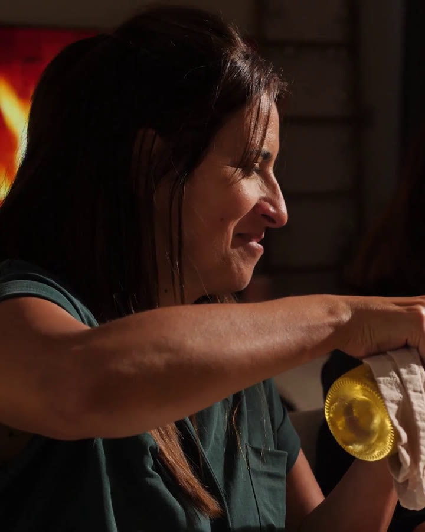
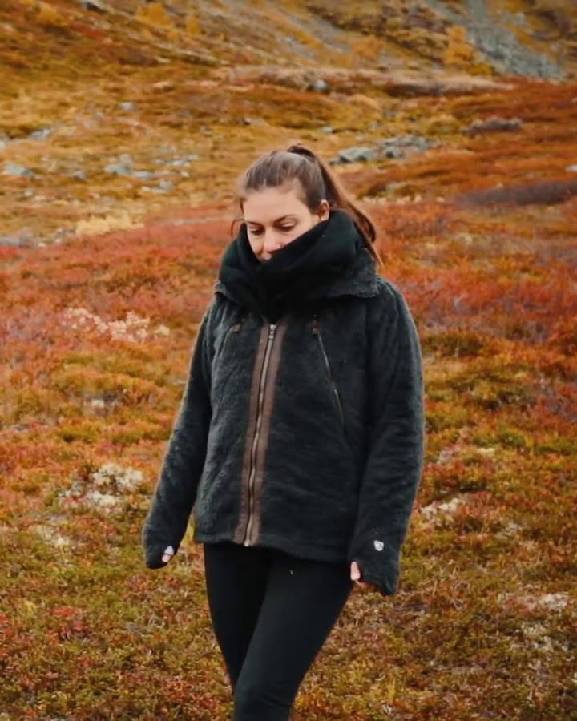
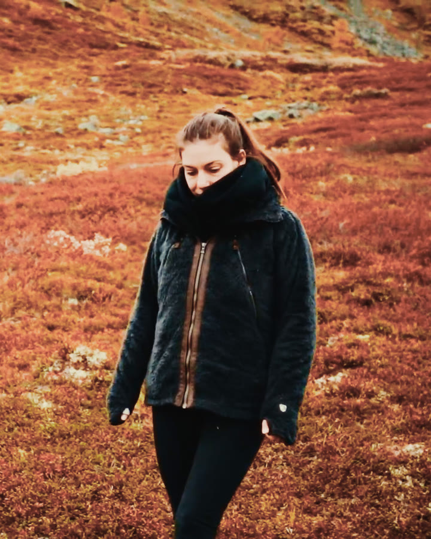
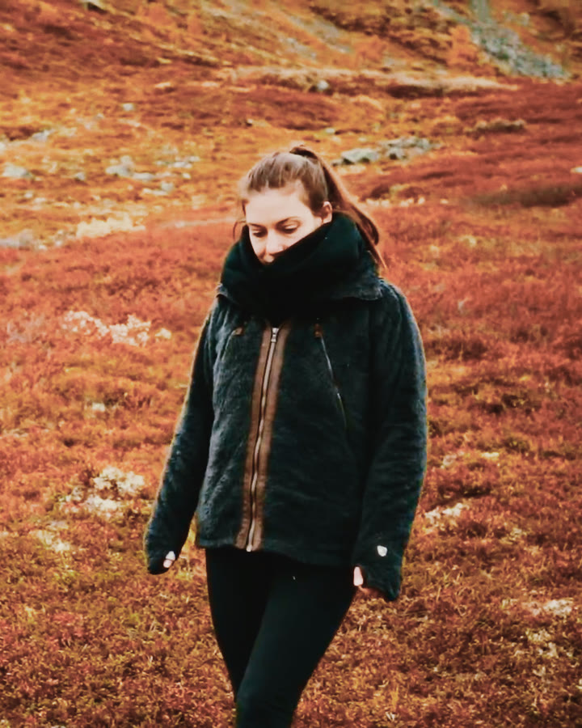
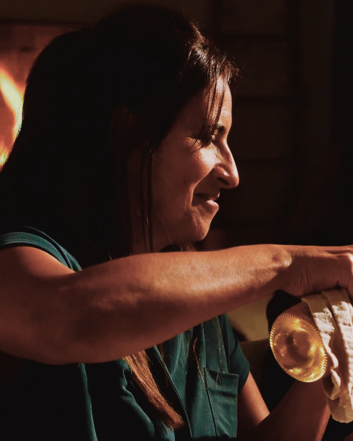
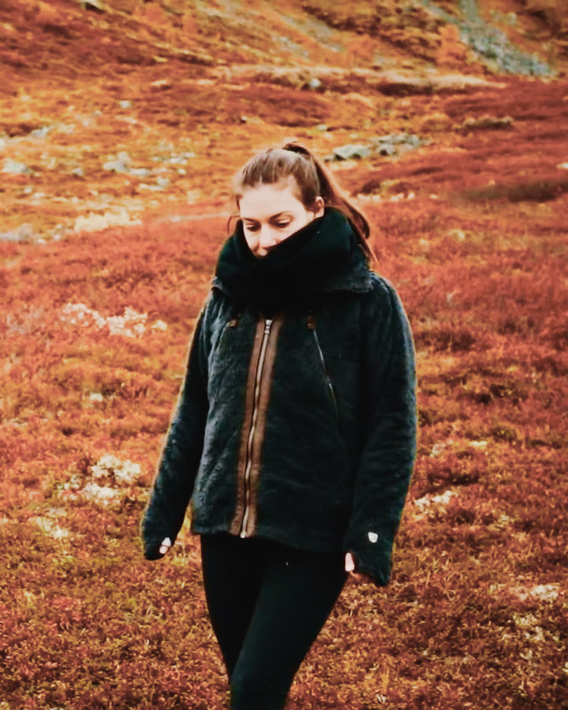
- Kodak · 2383Vision Color PrintA cópia de cinema mais usada: contraste de projeção e preto denso.
- Kodak · 2393Vision PremierA cópia premium: preto ainda mais fundo e cor mais cheia.
- Fujifilm · 3513Eterna-CPA cópia da Fuji: verde mais frio e branco limpo.
03The engine
Um laboratório de cinema
dentro do seu editor.
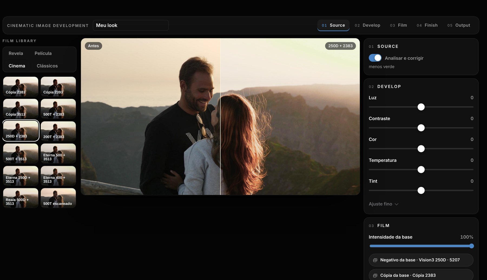
04One frame, different stories
Um frame.
Seis histórias.
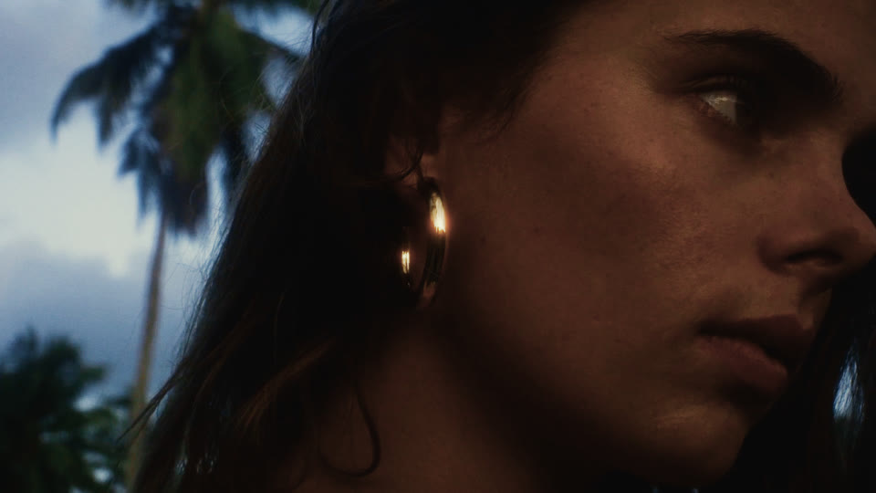
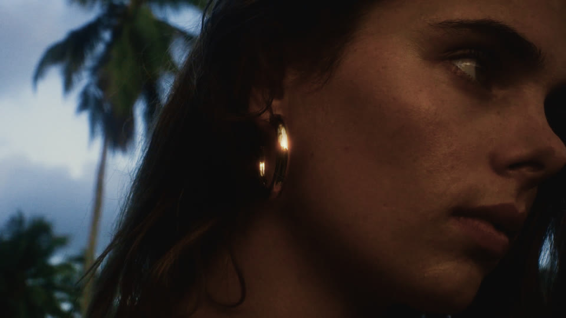
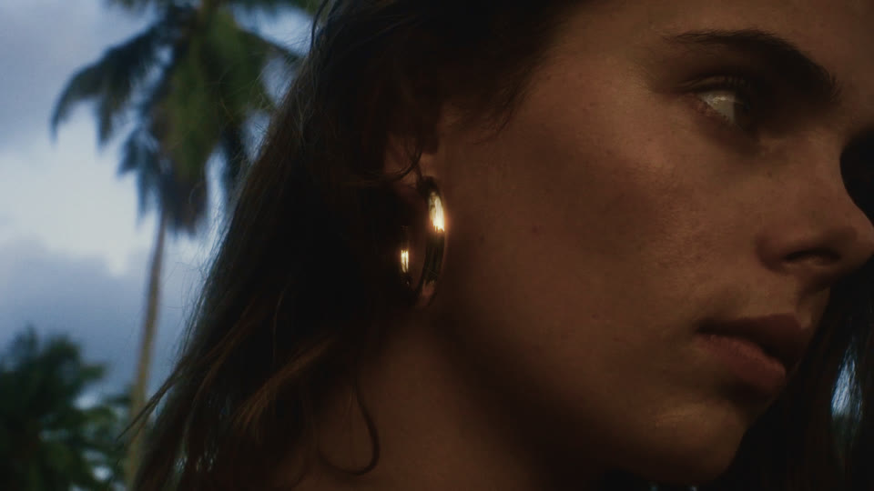
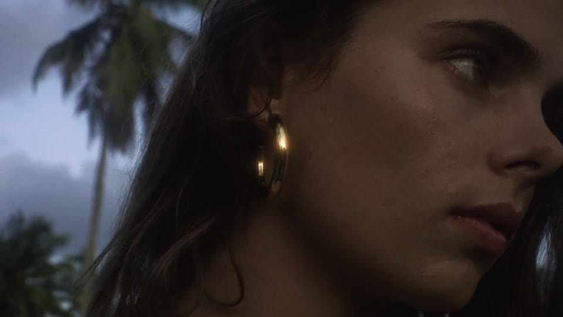
Uma conta.
Todas as ferramentas.
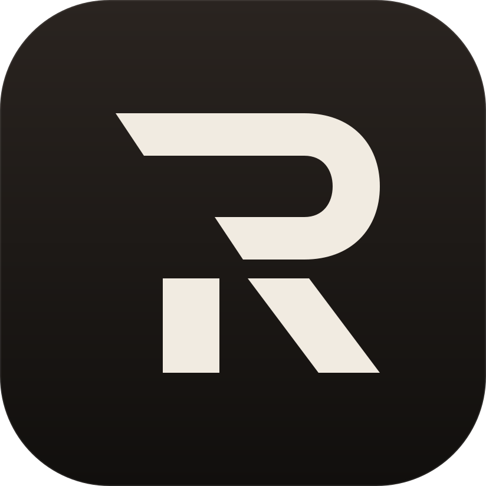
Revela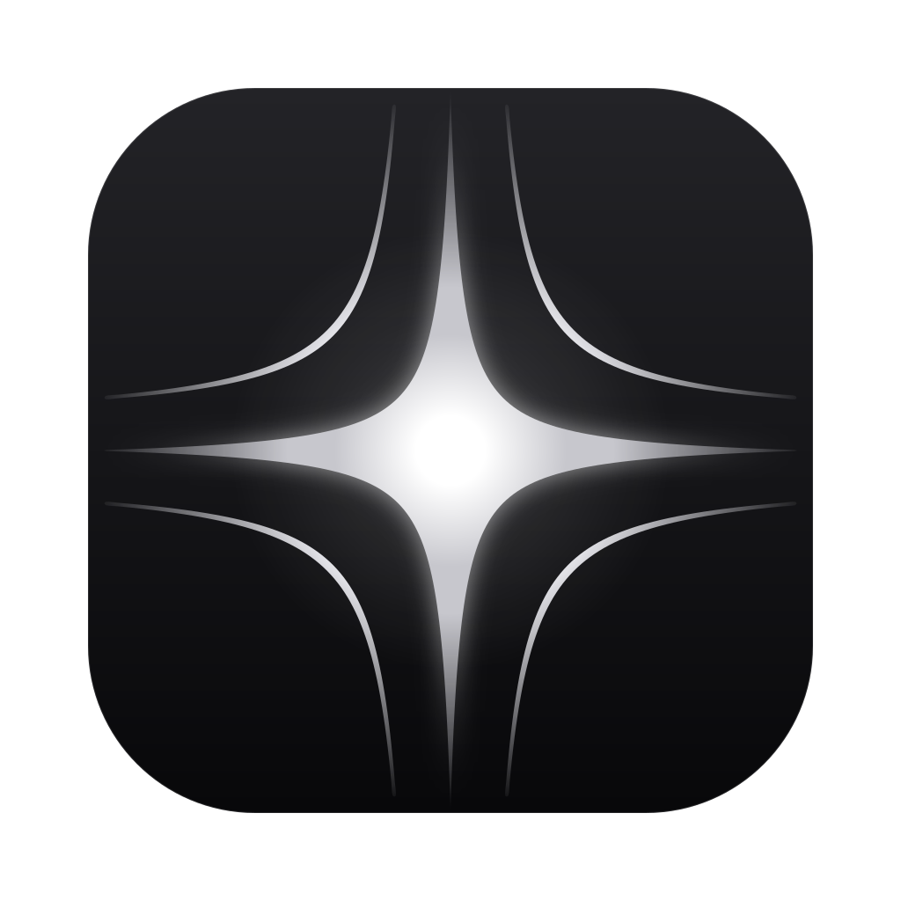
AEON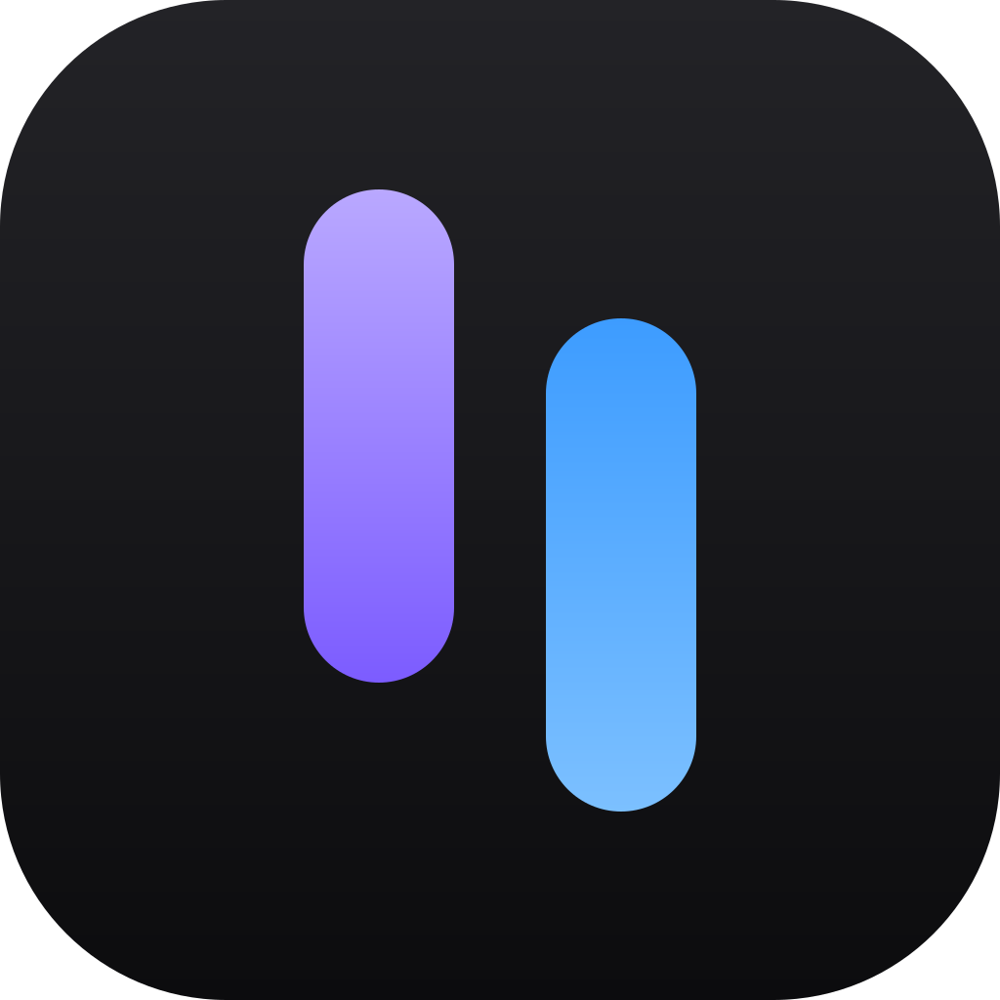
SOBEDESCE Synquei NOSSOM TPeasy
TPeasy
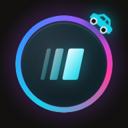
Carro do Freela Maestro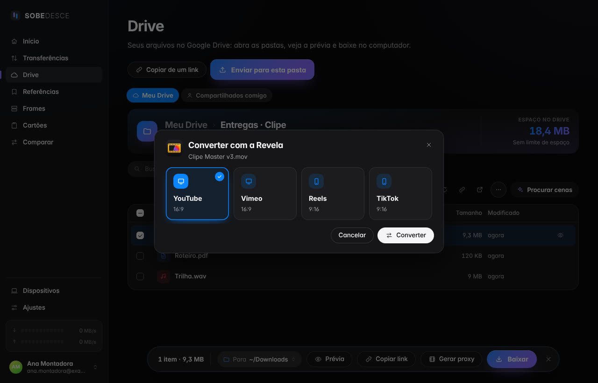
No SOBEDESCE: botão direito → Converter com a Revela.
Chegando à Revela
Z.
Uma IA para todo o ecossistema.
No painel inicial do app, quando ele abrir. Ela conversa e lê sua conta; a cor é sua.
- Mesma conta
- Conversas reunidas
- Você confere antes
- 1 crédito por resposta
Suas imagens não saem do aparelho
05Your image. Your film.
Sua imagem.
Seu filme.
O REVELAFILM chega com a sua conta Absolute ZRO. Em desenvolvimento.
REVELAFILM by Absolute ZRO